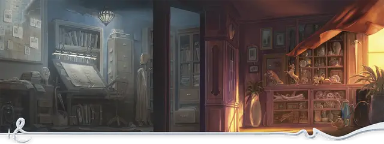

Агент Девятого пера
Agent of the Ninth Quill

Характеристики Ловкость, Интеллект, Харизма
Черта Мистический лазутчик
Навыки Ловкость рук, Тайная магия
Инструменты Воровские инструменты
Снаряжение Выберите А или Б: (А) Кинжал, Лёгкий молот, Воровские инструменты, Железные шипы, Верёвка, Дорожная одежда, 17 ЗМ; или (Б) 50 ЗМ
Ваш острый ум и отточенные навыки проникновения привели вас в ряды Девятой иглы, организации воров, шпионов и саботажников, крадущих у других магические реликвии и знания. Авантюры, в которые вы ввязались для них — от кражи магических предметов до подрыва деятельности целых групп магов — позволили вам ещё лучше развить ваши ловкость и магические уловки.